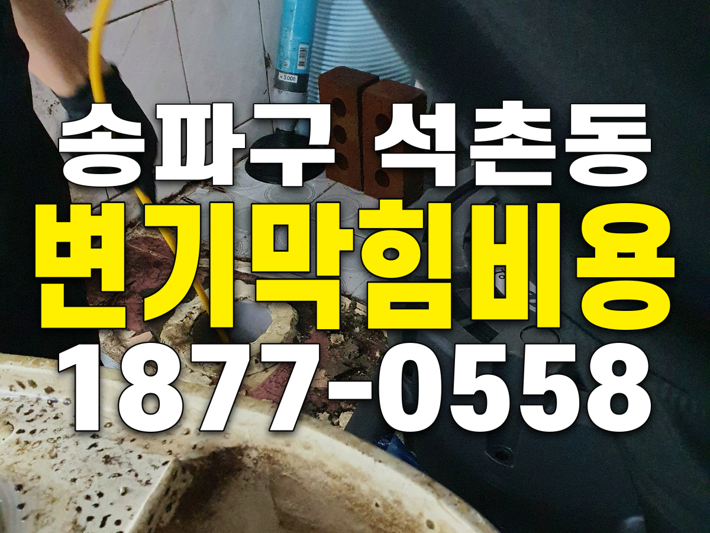
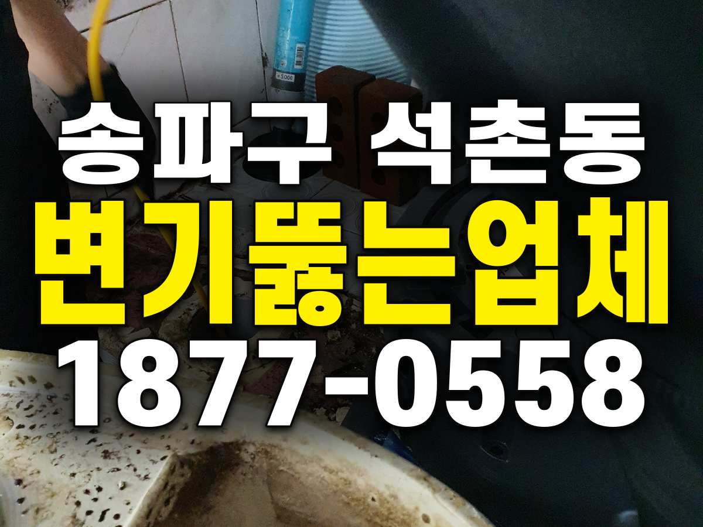
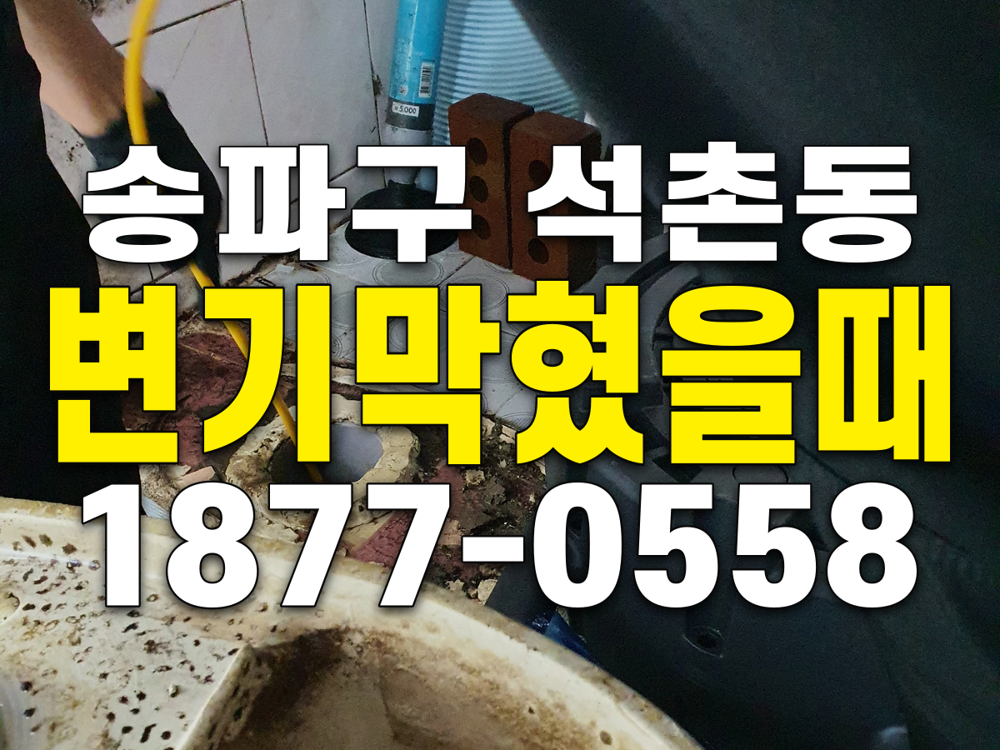
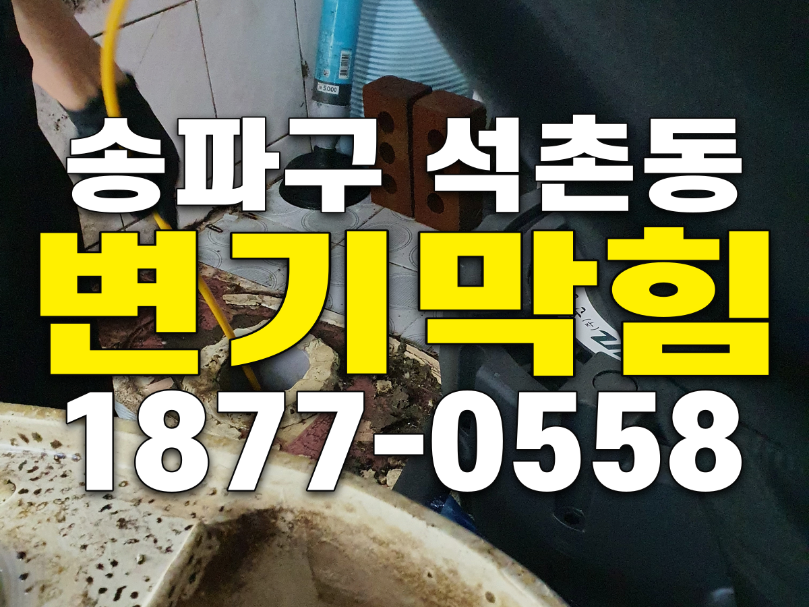
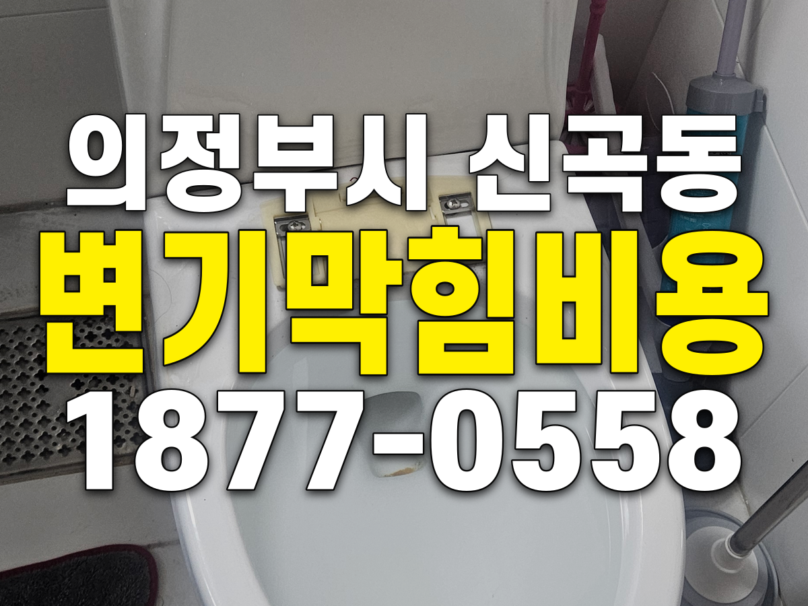
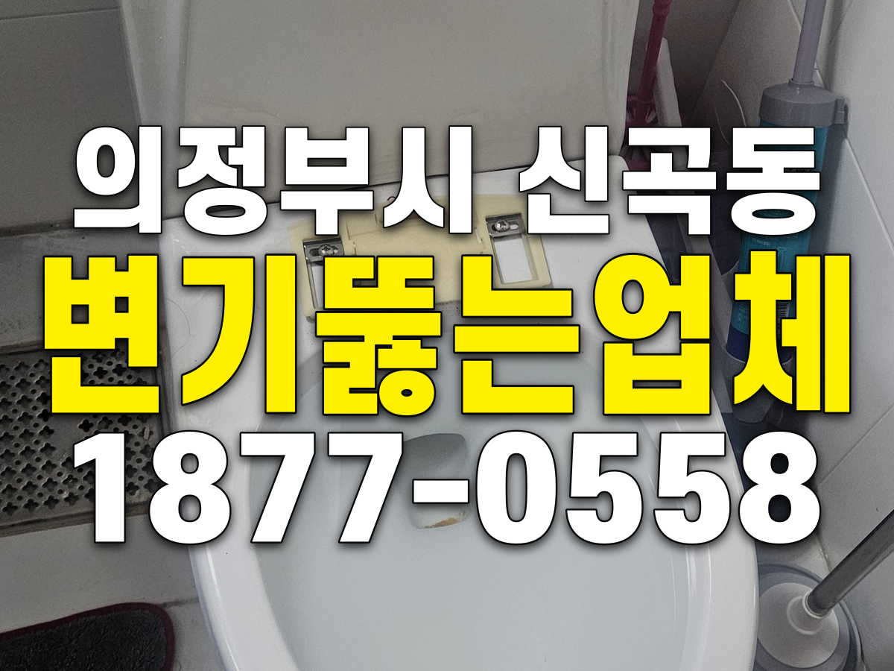
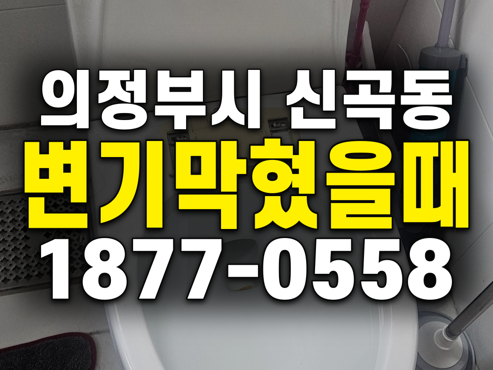
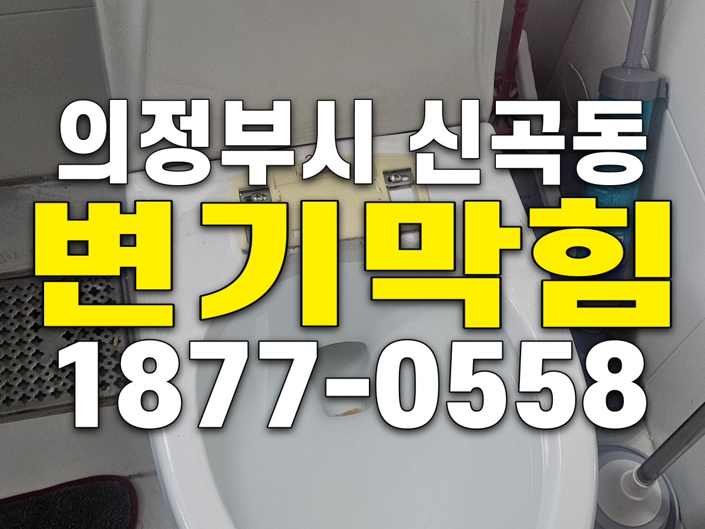
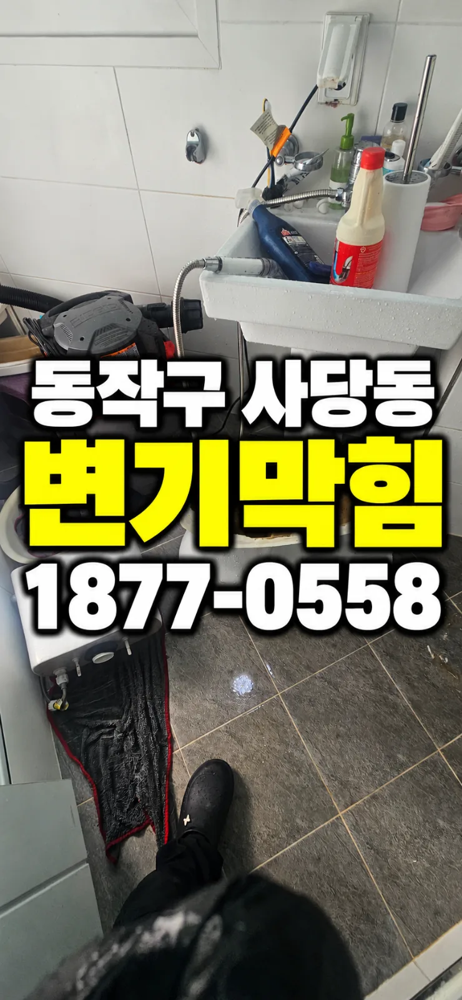

변기막힘 증상은 원인 구간부터 확인합니다
물이 천천히 내려가거나 수위가 차오르는 막힘, 물이 안 내려가는 증상, 이물질 막힘, 반복 막힘, 변기 역류 등 같은 변기막힘 증상이라도 변기·배수구 내부, 연결 배관, 오수관 또는 공용배관처럼 원인이 발생한 위치가 다를 수 있습니다. 신라건축설비는 증상만 보고 작업을 정하지 않고 현장 상태를 확인한 뒤 필요한 작업 범위와 비용 조건을 먼저 안내합니다.
실제 현장에서 확인되는 주요 원인: 물티슈·청소포·음식물·플라스틱 같은 생활 이물질, 변기 트랩 걸림, 하부 오수관 막힘
주요 점검·작업: 석션·에어건·내시경 점검·변기 탈거와 오수관 확인
변기막힘 원인부터 변기뚫는업체 선택까지
변기막힘 원인·변기역류·변기 물 안내려감·변기 이물질·반복되는 변기막힘·변기 탈거·오수관 막힘처럼 검색하는 상황은 표현은 달라도 같은 배수 문제에서 시작되는 경우가 많습니다. 신라건축설비는 단순 관통 여부만 보지 않고 증상, 막힘 위치, 이물질 여부와 배관 상태를 함께 확인해 필요한 작업을 판단합니다.
변기뚫는업체 선택 전 실제 작업사례를 확인하세요
광고 문구만이 아니라 실제로 어떤 증상을 어떤 장비로 진단하고 해결했는지가 중요합니다. 현재 신라건축설비 홈페이지에는 변기막힘 실제 현장사례 71편이 공개되어 있으며 지역, 원인, 작업 과정과 결과를 확인할 수 있습니다.
지역별 변기막힘·변기뚫는업체 실제 출동 기록
최근 변기막힘 해결사례

송파구 석촌동 변기막힘비용, 탈거·오수관 작업 범위 확인
석촌동 1층 비닐·물티슈 제거 사례로 살펴보는 작업 범위입니다. 변기 탈거, 샤프트·스프링 구동기, 외부 내시경 점검과 통수 확인 항목을 정리합니다.

송파구 석촌동 변기뚫는업체, 샤프트·스프링으로 오수관 작업
신라건축설비의 석촌동 1층 오수관 작업 기록입니다. 변기 탈거와 비닐·물티슈 제거, 외부 내시경 점검 및 통수 확인 과정을 소개합니다.

송파구 석촌동 변기막혔을때, 오수관까지 작업한 1층 현장
변기에서 시작된 배수 문제로 오수관을 작업한 석촌동 사례입니다. 비닐·물티슈 제거부터 외부 정화조 출수관 내시경 점검과 통수 확인까지 진행했습니다.

송파구 석촌동 변기막힘, 1층 오수관 비닐·물티슈 제거 작업
석촌동 1층에서 변기를 탈거하고 오수관의 비닐과 물티슈를 제거했습니다. 샤프트와 스프링 구동기를 함께 사용하고 외부 정화조 출수관 내시경 점검 및 통수 확인으로 마무리했습니다.

의정부시 신곡동 변기막힘비용, 휴지걸이 봉 제거와 탈거 작업 범위
의정부시 신곡동 변기막힘비용을 알아볼 때 확인할 항목. 휴지걸이 봉을 탈거·에어건 작업으로 회수한 현장을 바탕으로 제거, 재설치, 마감과 통수 확인 범위를 정리합니다.

의정부시 신곡동 변기뚫는업체, 휴지걸이 봉 회수부터 재설치까지
의정부시 신곡동 변기뚫는업체를 찾을 때 확인할 작업 범위. 신라건축설비의 휴지걸이 봉 제거 사례로 탈거·에어건·재설치·정상 통수 확인 과정을 설명합니다.

의정부시 신곡동 변기막혔을때, 휴지걸이 봉이 빠졌다면 확인할 점
의정부시 신곡동에서 휴지걸이 봉이 빠져 막힌 변기를 탈거·에어건 작업으로 해결한 기록입니다. 물건이 들어간 뒤 변기가 막혔을 때의 대응과 상담에 필요한 정보를 정리했습니다.

의정부시 신곡동 변기막힘, 빠진 휴지걸이 봉을 탈거·에어건 작업으로 회수
의정부시 신곡동 변기막힘 현장. 변기에 빠진 휴지걸이 봉을 변기 탈거 후 뒤집어 에어건으로 제거하고, 재설치와 주변 마감을 정리한 뒤 정상 통수를 확인했습니다.

용인시 처인구 원삼면 목신리 변기막힘 | 탈거 후 석션 에어건 통수
용인시 처인구 원삼면 목신리 변기막힘 원삼면 목신리에서 오수를 석션한 뒤 변기를 탈거하고 추가 석션과 에어건 작업으로 통수를 회복한 사례입니다

용인시 처인구 포곡읍 전대리 변기막힘 | 탈거 에어건 물티슈 제거
용인시 처인구 포곡읍 전대리 변기막힘 관통기 석션 시도로 풀리지 않아 변기를 탈거하고 에어건으로 물티슈를 제거한 뒤 통수를 확인했습니다

동작구 사당동 변기막힘 | 변기 탈거 후 하부 휴지 음식물 제거
동작구 사당동 변기막힘 변기 탈거 후 하부 배출구의 휴지와 음식물을 제거하고 에어건 작업과 백시멘트 마감 및 정상 통수 확인을 마쳤습니다

관악구 봉천동 변기막힘 | 유리 화장품 용기 탈거 후 에어건으로 회수
관악구 봉천동 변기막힘 변기 안에 끼인 유리 화장품 용기의 파손 우려를 고려해 처음부터 탈거하고 용기 위치와 변기 각도를 조정하며 에어건으로
서울·경기·인천 변기막힘 출동
서울 46편 · 경기 24편 · 인천 1편의 실제 기록을 기반으로 지역별 사례를 연결합니다. 새로운 현장사례가 등록되면 해당 서비스와 지역 허브에 함께 누적됩니다.